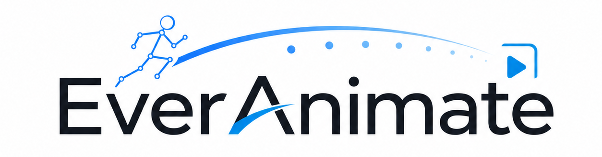

Minute-Scale Human Animation via Latent Flow Restoration
Official project page with frame-aligned 25 fps video comparisons between our method and representative baselines.

Official project page with frame-aligned 25 fps video comparisons between our method and representative baselines.